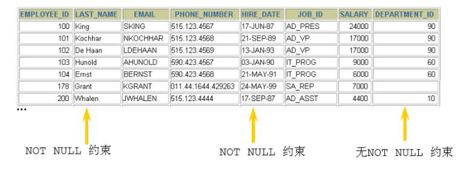
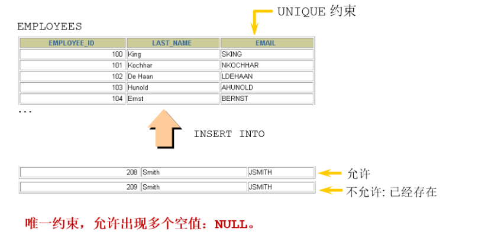
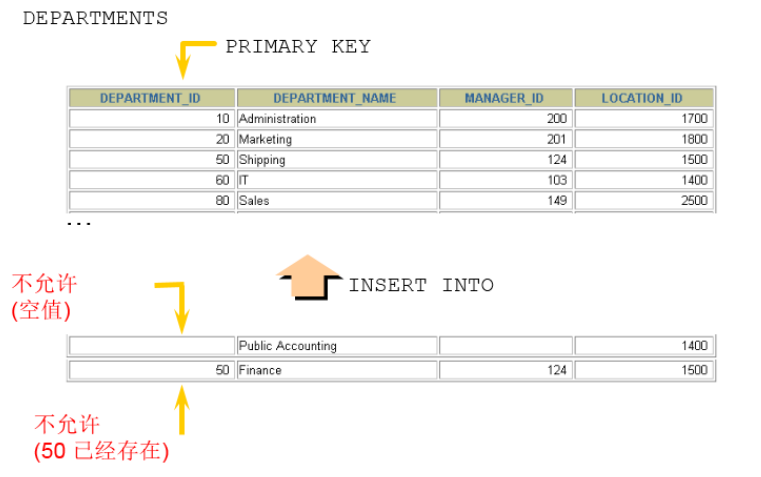
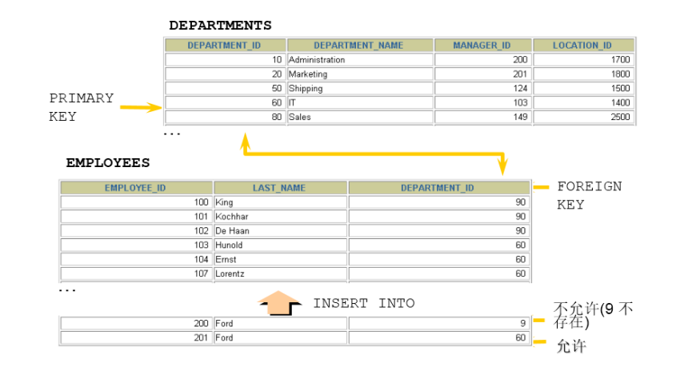

1. 约束(constraint)概述
1.1 为什么需要约束
数据完整性（Data Integrity）是指数据的精确性（Accuracy）和可靠性（Reliability）。它是防止数据库中 存在不符合语义规定的数据和防止因错误信息的输入输出造成无效操作或错误信息而提出的。 为了保证数据的完整性，SQL规范以约束的方式对表数据进行额外的条件限制。从以下四个方面考虑：实体完整性（Entity Integrity）：例如，同一个表中，不能存在两条完全相同无法区分的记录域完整性（Domain Integrity）：例如：年龄范围0-120，性别范围“男/女”引用完整性（Referential Integrity）：例如：员工所在部门，在部门表中要能找到这个部门用户自定义完整性（User-defined Integrity）：例如：用户名唯一、密码不能为空等，本部门 经理的工资不得高于本部门职工的平均工资的5倍。
1.2 什么是约束
约束是表级的强制规定。
可以在创建表时规定约束（通过 CREATE TABLE 语句），或者在表创建之后通过 ALTER TABLE 语句规定 约束。
1.3 约束的分类
根据约束数据列的限制，约束可分为：
- 单列约束：每个约束只约束一列
- 多列约束：每个约束可约束多列数据
根据约束的作用范围，约束可分为：
- 列级约束：只能作用在一个列上，跟在列的定义后面
- 表级约束：可以作用在多个列上，不与列一起，而是单独定义
| 位置 | 支持的约束类型 | 是否可以起约束名 | |
|---|---|---|---|
| 列级约束 | 列的后面 | 语法都支持，但外键没有效果 | 不可以 |
| 表级约束 | 所有列的下面 | 默认和非空不支持，其他支持 | 可以（主键没有效果） |
- 根据约束起的作用，约束可分为：
- NOT NULL 非空约束，规定某个字段不能为空
- UNIQUE 唯一约束，规定某个字段在整个表中是唯一的
- PRIMARY KEY 主键(非空且唯一)约束
- FOREIGN KEY 外键约束
- CHECK 检查约束
- DEFAULT 默认值约束
注意： MySQL不支持check约束，但可以使用check约束，而没有任何效果
- 查看某个表已有的约束
#information_schema数据库名（系统库）
#table_constraints表名称（专门存储各个表的约束）
SELECT * FROM information_schema.table_constraints
WHERE table_name = '表名称';
2. 非空约束
2.1 作用
限定某个字段/某列的值不允许为空

2.2 关键字
NOT NULL
2.3 特点
- 默认，所有的类型的值都可以是NULL，包括INT、FLOAT等数据类型
- 非空约束只能出现在表对象的列上，只能某个列单独限定非空，不能组合非空
- 一个表可以有很多列都分别限定了非空
- 空字符串不等于NULL，0也不等于NULL
2.4 添加非空约束
（1）建表时
CREATE TABLE 表名称(
字段名 数据类型,
字段名 数据类型 NOT NULL,
字段名 数据类型 NOT NULL
);
举例：
CREATE TABLE emp(
id INT(10) NOT NULL,
NAME VARCHAR(20) NOT NULL,
sex CHAR NULL
);
CREATE TABLE student(
sid int,
sname varchar(20) not null,
tel char(11) ,
cardid char(18) not null
);
insert into student values(1,'张三','13710011002','110222198912032545'); #成功
insert into student values(2,'李四','13710011002',null);#身份证号为空
ERROR 1048 (23000): Column 'cardid' cannot be null
insert into student values(2,'李四',null,'110222198912032546');#成功，tel允许为空
insert into student values(3,null,null,'110222198912032547');#失败
ERROR 1048 (23000): Column 'sname' cannot be null
（2）建表后
alter table 表名称 modify 字段名 数据类型 not null;
举例：
ALTER TABLE emp
MODIFY sex VARCHAR(30) NOT NULL;
alter table student modify sname varchar(20) not null;
2.5 删除非空约束
alter table 表名称 modify 字段名 数据类型 NULL; #去掉not null，相当于修改某个非注解字段，该字段允许为空
或
alter table 表名称 modify 字段名 数据类型; #去掉not null，相当于修改某个非注解字段，该字段允许为空
举例：
ALTER TABLE emp
MODIFY sex VARCHAR(30) NULL;
ALTER TABLE emp
MODIFY NAME VARCHAR(15) DEFAULT 'abc' NULL;
3. 唯一性约束
3.1 作用
用来限制某个字段/某列的值不能重复。
3.2 关键字
UNIQUE
3.3 特点
- 同一个表可以有多个唯一约束。
- 唯一约束可以是某一个列的值唯一，也可以多个列组合的值唯一。
- 唯一性约束允许列值为空。
- 在创建唯一约束的时候，如果不给唯一约束命名，就默认和列名相同。
- MySQL会给唯一约束的列上默认创建一个唯一索引。
3.4 添加唯一约束
（1）建表时
create table 表名称(
字段名 数据类型,
字段名 数据类型 unique,
字段名 数据类型 unique key,
字段名 数据类型
);
create table 表名称(
字段名 数据类型,
字段名 数据类型,
字段名 数据类型,
[constraint 约束名] unique key(字段名)
);
举例：
create table student(
sid int,
sname varchar(20),
tel char(11) unique,
cardid char(18) unique key
);
CREATE TABLE t_course(
cid INT UNIQUE,
cname VARCHAR(100) UNIQUE,
description VARCHAR(200)
);
CREATE TABLE USER(
id INT NOT NULL,
NAME VARCHAR(25),
PASSWORD VARCHAR(16),
-- 使用表级约束语法
CONSTRAINT uk_name_pwd UNIQUE(NAME,PASSWORD)
);
表示用户名和密码组合不能重复
insert into student values(1,'张三','13710011002','101223199012015623');
insert into student values(2,'李四','13710011003','101223199012015624');
mysql> select * from student;
+-----+-------+-------------+--------------------+
| sid | sname | tel | cardid |
+-----+-------+-------------+--------------------+
| 1 | 张三 | 13710011002 | 101223199012015623 |
| 2 | 李四 | 13710011003 | 101223199012015624 |
+-----+-------+-------------+--------------------+
2 rows in set (0.00 sec)
insert into student values(3,'王五','13710011004','101223199012015624'); #身份证号重复
ERROR 1062 (23000): Duplicate entry '101223199012015624' for key 'cardid'
insert into student values(3,'王五','13710011003','101223199012015625');
ERROR 1062 (23000): Duplicate entry '13710011003' for key 'tel'
（2）建表后指定唯一键约束
# 字段列表中如果是一个字段，表示该列的值唯一。如果是两个或更多个字段，那么复合唯一，即多个字段的组合是唯一的
# 方式1：
alter table 表名称 add unique key(字段列表);
#方式2：
alter table 表名称 modify 字段名 字段类型 unique;
举例：
ALTER TABLE USER
ADD CONSTRAINT uk_name_pwd UNIQUE(NAME,PASSWORD);
ALTER TABLE USER
MODIFY NAME VARCHAR(20) UNIQUE;
create table student(
sid int primary key,
sname varchar(20),
tel char(11) ,
cardid char(18)
);
alter table student add unique key(tel);
alter table student add unique key(cardid);
3.5 关于复合唯一约束
create table 表名称(
字段名 数据类型,
字段名 数据类型,
字段名 数据类型,
unique key(字段列表) #字段列表中写的是多个字段名，多个字段名用逗号分隔，表示那么是复合唯一，即多
个字段的组合是唯一的
);
#学生表
create table student(
sid int, #学号
sname varchar(20), #姓名
tel char(11) unique key, #电话
cardid char(18) unique key #身份证号
);
#课程表
create table course(
cid int, #课程编号
cname varchar(20) #课程名称
);
#选课表
create table student_course(
id int,
sid int,
cid int,
score int,
unique key(sid,cid) #复合唯一
);
insert into student values(1,'张三','13710011002','101223199012015623');#成功
insert into student values(2,'李四','13710011003','101223199012015624');#成功
insert into course values(1001,'Java'),(1002,'MySQL');#成功
mysql> select * from student;
+-----+-------+-------------+--------------------+
| sid | sname | tel | cardid |
+-----+-------+-------------+--------------------+
| 1 | 张三 | 13710011002 | 101223199012015623 |
| 2 | 李四 | 13710011003 | 101223199012015624 |
+-----+-------+-------------+--------------------+
2 rows in set (0.00 sec)
mysql> select * from course;
+------+-------+
| cid | cname |
+------+-------+
| 1001 | Java |
| 1002 | MySQL |
+------+-------+
2 rows in set (0.00 sec)
insert into student_course values
(1, 1, 1001, 89),
(2, 1, 1002, 90),
(3, 2, 1001, 88),
(4, 2, 1002, 56);#成功
mysql> select * from student_course;
+----+------+------+-------+
| id | sid | cid | score |
+----+------+------+-------+
| 1 | 1 | 1001 | 89 |
| 2 | 1 | 1002 | 90 |
| 3 | 2 | 1001 | 88 |
| 4 | 2 | 1002 | 56 |
+----+------+------+-------+
4 rows in set (0.00 sec)
insert into student_course values (5, 1, 1001, 88);#失败
#ERROR 1062 (23000): Duplicate entry '1-1001' for key 'sid' 违反sid-cid的复合唯一
3.6 删除唯一约束
- 添加唯一性约束的列上也会自动创建唯一索引。
- 删除唯一约束只能通过删除唯一索引的方式删除。
- 删除时需要指定唯一索引名，唯一索引名就和唯一约束名一样。
- 如果创建唯一约束时未指定名称，如果是单列，就默认和列名相同；如果是组合列，那么默认和() 中排在第一个的列名相同。也可以自定义唯一性约束名。
#查看都有哪些约束
SELECT * FROM information_schema.table_constraints WHERE table_name = '表名';
ALTER TABLE USER
DROP INDEX uk_name_pwd;
注意：可以通过 show index from 表名称; 查看表的索引
4. PRIMARY KEY 约束
4.1 作用
用来唯一标识表中的一行记录。
4.2 关键字
primary key
4.3 特点
主键约束相当于唯一约束+非空约束的组合，主键约束列不允许重复，也不允许出现空值。

- 一个表最多只能有一个主键约束，建立主键约束可以在列级别创建，也可以在表级别上创建。
- 主键约束对应着表中的一列或者多列（复合主键）
- 如果是多列组合的复合主键约束，那么这些列都不允许为空值，并且组合的值不允许重复。
- MySQL的主键名总是PRIMARY，就算自己命名了主键约束名也没用。
- 当创建主键约束时，系统默认会在所在的列或列组合上建立对应的主键索引（能够根据主键查询 的，就根据主键查询，效率更高）。如果删除主键约束了，主键约束对应的索引就自动删除了。
- 需要注意的一点是，不要修改主键字段的值。因为主键是数据记录的唯一标识，如果修改了主键的 值，就有可能会破坏数据的完整性。
4.4 添加主键约束
（1）建表时指定主键约束
create table 表名称(
字段名 数据类型 primary key, #列级模式
字段名 数据类型,
字段名 数据类型
);
create table 表名称(
字段名 数据类型,
字段名 数据类型,
字段名 数据类型,
[constraint 约束名] primary key(字段名) #表级模式
);
举例：
create table temp(
id int primary key,
name varchar(20)
);
mysql> desc temp;
+-------+-------------+------+-----+---------+-------+
| Field | Type | Null | Key | Default | Extra |
+-------+-------------+------+-----+---------+-------+
| id | int(11) | NO | PRI | NULL | |
| name | varchar(20) | YES | | NULL | |
+-------+-------------+------+-----+---------+-------+
2 rows in set (0.00 sec)
insert into temp values(1,'张三');#成功
insert into temp values(2,'李四');#成功
mysql> select * from temp;
+----+------+
| id | name |
+----+------+
| 1 | 张三 |
| 2 | 李四 |
+----+------+
2 rows in set (0.00 sec)
insert into temp values(1,'张三');#失败
ERROR 1062 (23000): Duplicate（重复） entry（键入，输入） '1' for key 'PRIMARY'
insert into temp values(1,'王五');#失败
ERROR 1062 (23000): Duplicate entry '1' for key 'PRIMARY'
insert into temp values(3,'张三');#成功
mysql> select * from temp;
+----+------+
| id | name |
+----+------+
| 1 | 张三 |
| 2 | 李四 |
| 3 | 张三 |
+----+------+
3 rows in set (0.00 sec)
insert into temp values(4,null);#成功
insert into temp values(null,'李琦');#失败
ERROR 1048 (23000): Column 'id' cannot be null
mysql> select * from temp;
+----+------+
| id | name |
+----+------+
| 1 | 张三 |
| 2 | 李四 |
| 3 | 张三 |
| 4 | NULL |
+----+------+
4 rows in set (0.00 sec)
#演示一个表建立两个主键约束
create table temp(
id int primary key,
name varchar(20) primary key
);
ERROR 1068 (42000): Multiple（多重的） primary key defined（定义）
再举例：
列级约束
CREATE TABLE emp4(
id INT PRIMARY KEY AUTO_INCREMENT ,
NAME VARCHAR(20)
);
表级约束
CREATE TABLE emp5(
id INT NOT NULL AUTO_INCREMENT,
NAME VARCHAR(20),
pwd VARCHAR(15),
CONSTRAINT emp5_id_pk PRIMARY KEY(id)
);
（2）建表后增加主键约束
ALTER TABLE 表名称 ADD PRIMARY KEY(字段列表); #字段列表可以是一个字段，也可以是多个字段，如果是多个字段的话，是复合主键
ALTER TABLE student ADD PRIMARY KEY (sid);
ALTER TABLE emp5 ADD PRIMARY KEY(NAME,pwd)
4.5 关于复合主键
create table 表名称(
字段名 数据类型,
字段名 数据类型,
字段名 数据类型,
primary key(字段名1,字段名2) #表示字段1和字段2的组合是唯一的，也可以有更多个字段
);
#学生表
create table student(
sid int primary key, #学号
sname varchar(20) #学生姓名
);
#课程表
create table course(
cid int primary key, #课程编号
cname varchar(20) #课程名称
);
#选课表
create table student_course(
sid int,
cid int,
score int,
primary key(sid,cid) #复合主键
);
insert into student values(1,'张三'),(2,'李四');
insert into course values(1001,'Java'),(1002,'MySQL');
mysql> select * from student;
+-----+-------+
| sid | sname |
+-----+-------+
| 1 | 张三 |
| 2 | 李四 |
+-----+-------+
2 rows in set (0.00 sec)
mysql> select * from course;
+------+-------+
| cid | cname |
+------+-------+
| 1001 | Java |
| 1002 | MySQL |
+------+-------+
2 rows in set (0.00 sec)
insert into student_course values(1, 1001, 89),(1,1002,90),(2,1001,88),(2,1002,56);
mysql> select * from student_course;
+-----+------+-------+
| sid | cid | score |
+-----+------+-------+
| 1 | 1001 | 89 |
| 1 | 1002 | 90 |
| 2 | 1001 | 88 |
| 2 | 1002 | 56 |
+-----+------+-------+
4 rows in set (0.00 sec)
insert into student_course values(1, 1001, 100);
ERROR 1062 (23000): Duplicate entry '1-1001' for key 'PRIMARY'
mysql> desc student_course;
+-------+---------+------+-----+---------+-------+
| Field | Type | Null | Key | Default | Extra |
+-------+---------+------+-----+---------+-------+
| sid | int(11) | NO | PRI | NULL | |
| cid | int(11) | NO | PRI | NULL | |
| score | int(11) | YES | | NULL | |
+-------+---------+------+-----+---------+-------+
3 rows in set (0.00 sec)
再举例
CREATE TABLE emp6(
id INT NOT NULL,
NAME VARCHAR(20),
pwd VARCHAR(15),
CONSTRAINT emp7_pk PRIMARY KEY(NAME,pwd)
);
4.6 删除主键约束
alter table 表名称 drop primary key;
举例
ALTER TABLE student DROP PRIMARY KEY;
ALTER TABLE emp5 DROP PRIMARY KEY;
说明：删除主键约束，不需要指定主键名，因为一个表只有一个主键，删除主键约束后，非空还存在。
5. 自增列：AUTO_INCREMENT
5.1 作用
某个字段的值自增
5.2 关键字
auto_increment
5.3 特点和要求
（1）一个表最多只能有一个自增长列
（2）当需要产生唯一标识符或顺序值时，可设置自增长
（3）自增长列约束的列必须是键列（主键列，唯一键列）
（4）自增约束的列的数据类型必须是整数类型
（5）如果自增列指定了 0 和 null，会在当前最大值的基础上自增；如果自增列手动指定了具体值，直接 赋值为具体值。
错误演示：
create table employee(
eid int auto_increment,
ename varchar(20)
);
# ERROR 1075 (42000): Incorrect table definition; there can be only one auto column and it must be defined as a key
create table employee(
eid int primary key,
ename varchar(20) unique key auto_increment
);
# ERROR 1063 (42000): Incorrect column specifier for column 'ename' 因为ename不是整数类型
5.4 如何指定自增约束
（1）建表时
create table 表名称(
字段名 数据类型 primary key auto_increment,
字段名 数据类型 unique key not null,
字段名 数据类型 unique key,
字段名 数据类型 not null default 默认值,
);
create table 表名称(
字段名 数据类型 default 默认值 ,
字段名 数据类型 unique key auto_increment,
字段名 数据类型 not null default 默认值,,
primary key(字段名)
);
create table employee(
eid int primary key auto_increment,
ename varchar(20)
);
mysql> desc employee;
+-------+-------------+------+-----+---------+----------------+
| Field | Type | Null | Key | Default | Extra |
+-------+-------------+------+-----+---------+----------------+
| eid | int(11) | NO | PRI | NULL | auto_increment |
| ename | varchar(20) | YES | | NULL | |
+-------+-------------+------+-----+---------+----------------+
2 rows in set (0.00 sec)
（2）建表后
alter table 表名称 modify 字段名 数据类型 auto_increment;
例如：
create table employee(
eid int primary key ,
ename varchar(20)
);
alter table employee modify eid int auto_increment;
mysql> desc employee;
+-------+-------------+------+-----+---------+----------------+
| Field | Type | Null | Key | Default | Extra |
+-------+-------------+------+-----+---------+----------------+
| eid | int(11) | NO | PRI | NULL | auto_increment |
| ename | varchar(20) | YES | | NULL | |
+-------+-------------+------+-----+---------+----------------+
2 rows in set (0.00 sec)
5.5 如何删除自增约束
#alter table 表名称 modify 字段名 数据类型 auto_increment;#给这个字段增加自增约束
alter table 表名称 modify 字段名 数据类型; #去掉auto_increment相当于删除
alter table employee modify eid int;
mysql> desc employee;
+-------+-------------+------+-----+---------+-------+
| Field | Type | Null | Key | Default | Extra |
+-------+-------------+------+-----+---------+-------+
| eid | int(11) | NO | PRI | NULL | |
| ename | varchar(20) | YES | | NULL | |
+-------+-------------+------+-----+---------+-------+
2 rows in set (0.00 sec)
5.6 MySQL 8.0新特性—自增变量的持久化
在MySQL 8.0之前，自增主键AUTO_INCREMENT的值如果大于max(primary key)+1，在MySQL重启后，会重置AUTO_INCREMENT=max(primary key)+1，这种现象在某些情况下会导致业务主键冲突或者其他难以发 现的问题。 下面通过案例来对比不同的版本中自增变量是否持久化。 在MySQL 5.7版本中，测试步骤如下： 创建的数据表中包含自增主键的id字段，语句如下：
CREATE TABLE test1(
id INT PRIMARY KEY AUTO_INCREMENT
);
插入4个空值，执行如下：
INSERT INTO test1
VALUES(0),(0),(0),(0);
查询数据表test1中的数据，结果如下：
mysql> SELECT * FROM test1;
+----+
| id |
+----+
| 1 |
| 2 |
| 3 |
| 4 |
+----+
4 rows in set (0.00 sec)
删除id为4的记录，语句如下：
DELETE FROM test1 WHERE id = 4;
再次插入一个空值，语句如下：
INSERT INTO test1 VALUES(0);
查询此时数据表test1中的数据，结果如下：
mysql> SELECT * FROM test1;
+----+
| id |
+----+
| 1 |
| 2 |
| 3 |
| 5 |
+----+
4 rows in set (0.00 sec)
从结果可以看出，虽然删除了id为4的记录，但是再次插入空值时，并没有重用被删除的4，而是分配了 5。 删除id为5的记录，结果如下：
DELETE FROM test1 where id=5;
重启数据库，重新插入一个空值。
INSERT INTO test1 values(0);
再次查询数据表test1中的数据，结果如下：
mysql> SELECT * FROM test1;
+----+
| id |
+----+
| 1 |
| 2 |
| 3 |
| 4 |
+----+
4 rows in set (0.00 sec)
从结果可以看出，新插入的0值分配的是4，按照重启前的操作逻辑，此处应该分配6。出现上述结果的主 要原因是自增主键没有持久化。 在MySQL 5.7系统中，对于自增主键的分配规则，是由InnoDB数据字典 内部一个 计数器 来决定的，而该计数器只在 内存中维护 ，并不会持久化到磁盘中。当数据库重启时，该 计数器会被初始化。
在MySQL 8.0版本中，上述测试步骤最后一步的结果如下：
mysql> SELECT * FROM test1;
+----+
| id |
+----+
| 1 |
| 2 |
| 3 |
| 6 |
+----+
4 rows in set (0.00 sec)
从结果可以看出，自增变量已经持久化了。
MySQL 8.0将自增主键的计数器持久化到 重做日志 中。每次计数器发生改变，都会将其写入重做日志 中。如果数据库重启，InnoDB会根据重做日志中的信息来初始化计数器的内存值。
6. FOREIGN KEY 约束
6.1 作用
限定某个表的某个字段的引用完整性。
比如：员工表的员工所在部门的选择，必须在部门表能找到对应的部分。

6.2 关键字
FOREIGN KEY
6.3 主表和从表/父表和子表
主表（父表）：被引用的表，被参考的表
从表（子表）：引用别人的表，参考别人的表
例如：员工表的员工所在部门这个字段的值要参考部门表：部门表是主表，员工表是从表。
例如：学生表、课程表、选课表：选课表的学生和课程要分别参考学生表和课程表，学生表和课程表是 主表，选课表是从表。
6.4 特点
（1）从表的外键列，必须引用/参考主表的主键或唯一约束的列 为什么？因为被依赖/被参考的值必须是唯一的
（2）在创建外键约束时，如果不给外键约束命名，默认名不是列名，而是自动产生一个外键名（例如 student_ibfk_1;），也可以指定外键约束名。
（3）创建(CREATE)表时就指定外键约束的话，先创建主表，再创建从表
（4）删表时，先删从表（或先删除外键约束），再删除主表
（5）当主表的记录被从表参照时，主表的记录将不允许删除，如果要删除数据，需要先删除从表中依赖 该记录的数据，然后才可以删除主表的数据
（6）在“从表”中指定外键约束，并且一个表可以建立多个外键约束
（7）从表的外键列与主表被参照的列名字可以不相同，但是数据类型必须一样，逻辑意义一致。如果类 型不一样，创建子表时，就会出现错误“ERROR 1005 (HY000): Can't create table'database.tablename'(errno: 150)”。 例如：都是表示部门编号，都是int类型。
（8）当创建外键约束时，系统默认会在所在的列上建立对应的普通索引。但是索引名是外键的约束 名。（根据外键查询效率很高）
（9）删除外键约束后，必须 手动 删除对应的索引
6.5 添加外键约束
（1）建表时
create table 主表名称(
字段1 数据类型 primary key,
字段2 数据类型
);
create table 从表名称(
字段1 数据类型 primary key,
字段2 数据类型,
[CONSTRAINT <外键约束名称>] FOREIGN KEY（从表的某个字段) references 主表名(被参考字段)
);
# (从表的某个字段)的数据类型必须与主表名(被参考字段)的数据类型一致，逻辑意义也一样
# (从表的某个字段)的字段名可以与主表名(被参考字段)的字段名一样，也可以不一样
-- FOREIGN KEY: 在表级指定子表中的列
-- REFERENCES: 标示在父表中的列
create table dept( #主表
did int primary key, #部门编号
dname varchar(50) #部门名称
);
create table emp(#从表
eid int primary key, #员工编号
ename varchar(5), #员工姓名
deptid int, #员工所在的部门
foreign key (deptid) references dept(did) #在从表中指定外键约束
#emp表的deptid和和dept表的did的数据类型一致，意义都是表示部门的编号
);
说明：
（1）主表dept必须先创建成功，然后才能创建emp表，指定外键成功。
（2）删除表时，先删除从表emp，再删除主表dept
（2）建表后 一般情况下，表与表的关联都是提前设计好了的，因此，会在创建表的时候就把外键约束定义好。不 过，如果需要修改表的设计（比如添加新的字段，增加新的关联关系），但没有预先定义外键约束，那 么，就要用修改表的方式来补充定义。 格式：
ALTER TABLE 从表名 ADD [CONSTRAINT 约束名] FOREIGN KEY (从表的字段) REFERENCES 主表名(被引用字段) [on update xx][on delete xx];
举例：
ALTER TABLE emp1 ADD [CONSTRAINT emp_dept_id_fk] FOREIGN KEY(dept_id) REFERENCES dept(dept_id);
举例：
create table dept(
did int primary key, #部门编号
dname varchar(50) #部门名称
);
create table emp(
eid int primary key, #员工编号
ename varchar(5), #员工姓名
deptid int #员工所在的部门
);
#这两个表创建时，没有指定外键的话，那么创建顺序是随意
alter table emp add foreign key (deptid) references dept(did);
6.6 演示问题
（1）失败：不是键列
create table dept(
did int , #部门编号
dname varchar(50) #部门名称
);
create table emp(
eid int primary key, #员工编号
ename varchar(5), #员工姓名
deptid int, #员工所在的部门
foreign key (deptid) references dept(did)
);
#ERROR 1215 (HY000): Cannot add foreign key constraint 原因是dept的did不是键列
（2）失败：数据类型不一致
create table dept(
did int primary key, #部门编号
dname varchar(50) #部门名称
);
create table emp(
eid int primary key, #员工编号
ename varchar(5), #员工姓名
deptid char, #员工所在的部门
foreign key (deptid) references dept(did)
);
#ERROR 1215 (HY000): Cannot add foreign key constraint 原因是从表的deptid字段和主表的did字
段的数据类型不一致，并且要它俩的逻辑意义一致
（3）成功，两个表字段名一样
create table dept(
did int primary key, #部门编号
dname varchar(50) #部门名称
);
create table emp(
eid int primary key, #员工编号
ename varchar(5), #员工姓名
did int, #员工所在的部门
foreign key (did) references dept(did)
#emp表的deptid和和dept表的did的数据类型一致，意义都是表示部门的编号
#是否重名没问题，因为两个did在不同的表中
);
（4）添加、删除、修改问题
create table dept(
did int primary key, #部门编号
dname varchar(50) #部门名称
);
create table emp(
eid int primary key, #员工编号
ename varchar(5), #员工姓名
deptid int, #员工所在的部门
foreign key (deptid) references dept(did)
#emp表的deptid和和dept表的did的数据类型一致，意义都是表示部门的编号
);
insert into dept values(1001,'教学部');
insert into dept values(1003, '财务部');
insert into emp values(1,'张三',1001); #添加从表记录成功，在添加这条记录时，要求部门表有1001部门
insert into emp values(2,'李四',1005);#添加从表记录失败
ERROR 1452 (23000): Cannot add（添加） or update（修改） a child row: a foreign key
constraint fails (`atguigudb`.`emp`, CONSTRAINT `emp_ibfk_1` FOREIGN KEY (`deptid`)
REFERENCES `dept` (`did`)) # 从表emp添加记录失败，因为主表dept没有1005部门
mysql> select * from dept;
+------+--------+
| did | dname |
+------+--------+
| 1001 | 教学部 |
| 1003 | 财务部 |
+------+--------+
2 rows in set (0.00 sec)
mysql> select * from emp;
+-----+-------+--------+
| eid | ename | deptid |
+-----+-------+--------+
| 1 | 张三 | 1001 |
+-----+-------+--------+
1 row in set (0.00 sec)
update emp set deptid = 1002 where eid = 1;#修改从表失败
ERROR 1452 (23000): Cannot add（添加） or update（修改） a child row（子表的记录）: a
foreign key constraint fails（外键约束失败） (`atguigudb`.`emp`, CONSTRAINT `emp_ibfk_1`
FOREIGN KEY (`deptid`) REFERENCES `dept` (`did`)) #部门表did字段现在没有1002的值，所以员工表中不能修改员工所在部门deptid为1002
update dept set did = 1002 where did = 1001;#修改主表失败
ERROR 1451 (23000): Cannot delete（删除） or update（修改） a parent row（父表的记录）: a
foreign key constraint fails (`atguigudb`.`emp`, CONSTRAINT `emp_ibfk_1` FOREIGN KEY
(`deptid`) REFERENCES `dept` (`did`)) #部门表did的1001字段已经被emp引用了，所以部门表的1001字段就不能修改了。
update dept set did = 1002 where did = 1003;#修改主表成功 因为部门表的1003部门没有被emp表引用，所以可以修改
delete from dept where did=1001; #删除主表失败
ERROR 1451 (23000): Cannot delete（删除） or update（修改） a parent row（父表记录）: a
foreign key constraint fails (`atguigudb`.`emp`, CONSTRAINT `emp_ibfk_1` FOREIGN KEY
(`deptid`) REFERENCES `dept` (`did`)) #因为部门表did的1001字段已经被emp引用了，所以部门表的1001字段对应的记录就不能被删除
总结：约束关系是针对双方的
添加了外键约束后，主表的修改和删除数据受约束
- 添加了外键约束后，从表的添加和修改数据受约束
- 在从表上建立外键，要求主表必须存在
- 删除主表时，要求从表从表先删除，或将从表中外键引用该主表的关系先删除
6.7 约束等级
- Cascade方式 ：在父表上update/delete记录时，同步update/delete掉子表的匹配记录
- Set null方式 ：在父表上update/delete记录时，将子表上匹配记录的列设为null，但是要注意子 表的外键列不能为
- not null No action方式 ：如果子表中有匹配的记录，则不允许对父表对应候选键进行update/delete操作
- Restrict方式 ：同no action， 都是立即检查外键约束
- Set default方式 （在可视化工具SQLyog中可能显示空白）：父表有变更时，子表将外键列设置 成一个默认的值，但Innodb不能识别
如果没有指定等级，就相当于Restrict方式。
对于外键约束，最好是采用: ON UPDATE CASCADE ON DELETE RESTRICT 的方式。
（1）演示1：on update cascade on delete set null
create table dept(
did int primary key, #部门编号
dname varchar(50) #部门名称
);
create table emp(
eid int primary key, #员工编号
ename varchar(5), #员工姓名
deptid int, #员工所在的部门
foreign key (deptid) references dept(did) on update cascade on delete set null
#把修改操作设置为级联修改等级，把删除操作设置为set null等级
);
insert into dept values(1001,'教学部');
insert into dept values(1002, '财务部');
insert into dept values(1003, '咨询部');
insert into emp values(1,'张三',1001); #在添加这条记录时，要求部门表有1001部门
insert into emp values(2,'李四',1001);
insert into emp values(3,'王五',1002);
mysql> select * from dept;
mysql> select * from emp;
#修改主表成功，从表也跟着修改，修改了主表被引用的字段1002为1004，从表的引用字段就跟着修改为1004了
mysql> update dept set did = 1004 where did = 1002;
Query OK, 1 row affected (0.00 sec)
Rows matched: 1 Changed: 1 Warnings: 0
mysql> select * from dept;
+------+--------+
| did | dname |
+------+--------+
| 1001 | 教学部 |
| 1003 | 咨询部 |
| 1004 | 财务部 | #原来是1002，修改为1004
+------+--------+
3 rows in set (0.00 sec)
mysql> select * from emp;
+-----+-------+--------+
| eid | ename | deptid |
+-----+-------+--------+
| 1 | 张三 | 1001 |
| 2 | 李四 | 1001 |
| 3 | 王五 | 1004 | #原来是1002，跟着修改为1004
+-----+-------+--------+
3 rows in set (0.00 sec)
#删除主表的记录成功，从表对应的字段的值被修改为null
mysql> delete from dept where did = 1001;
Query OK, 1 row affected (0.01 sec)
mysql> select * from dept;
+------+--------+
| did | dname | #记录1001部门被删除了
+------+--------+
| 1003 | 咨询部 |
| 1004 | 财务部 |
+------+--------+
2 rows in set (0.00 sec)
mysql> select * from emp;
+-----+-------+--------+
| eid | ename | deptid |
+-----+-------+--------+
| 1 | 张三 | NULL | #原来引用1001部门的员工，deptid字段变为null
| 2 | 李四 | NULL |
| 3 | 王五 | 1004 |
+-----+-------+--------+
3 rows in set (0.00 sec)
（2）演示2：on update set null on delete cascade
create table dept(
did int primary key, #部门编号
dname varchar(50) #部门名称
);
create table emp(
eid int primary key, #员工编号
ename varchar(5), #员工姓名
deptid int, #员工所在的部门
foreign key (deptid) references dept(did) on update set null on delete cascade
#把修改操作设置为set null等级，把删除操作设置为级联删除等级
);
insert into dept values(1001,'教学部');
insert into dept values(1002, '财务部');
insert into dept values(1003, '咨询部');
insert into emp values(1,'张三',1001); #在添加这条记录时，要求部门表有1001部门
insert into emp values(2,'李四',1001);
insert into emp values(3,'王五',1002);
mysql> select * from dept;
+------+--------+
| did | dname |
+------+--------+
| 1001 | 教学部 |
| 1002 | 财务部 |
| 1003 | 咨询部 |
+------+--------+
3 rows in set (0.00 sec)
mysql> select * from emp;
+-----+-------+--------+
| eid | ename | deptid |
+-----+-------+--------+
| 1 | 张三 | 1001 |
| 2 | 李四 | 1001 |
| 3 | 王五 | 1002 |
+-----+-------+--------+
3 rows in set (0.00 sec)
#修改主表，从表对应的字段设置为null
mysql> update dept set did = 1004 where did = 1002;
Query OK, 1 row affected (0.00 sec)
Rows matched: 1 Changed: 1 Warnings: 0
mysql> select * from dept;
+------+--------+
| did | dname |
+------+--------+
| 1001 | 教学部 |
| 1003 | 咨询部 |
| 1004 | 财务部 | #原来did是1002
+------+--------+
3 rows in set (0.00 sec)
mysql> select * from emp;
+-----+-------+--------+
| eid | ename | deptid |
+-----+-------+--------+
| 1 | 张三 | 1001 |
| 2 | 李四 | 1001 |
| 3 | 王五 | NULL | #原来deptid是1002，因为部门表1002被修改了，1002没有对应的了，就设置为null
+-----+-------+--------+
3 rows in set (0.00 sec)
#删除主表的记录成功，主表的1001行被删除了，从表相应的记录也被删除了
mysql> delete from dept where did=1001;
Query OK, 1 row affected (0.00 sec)
mysql> select * from dept;
+------+--------+
| did | dname | #部门表中1001部门被删除
+------+--------+
| 1003 | 咨询部 |
| 1004 | 财务部 |
+------+--------+
2 rows in set (0.00 sec)
mysql> select * from emp;
+-----+-------+--------+
| eid | ename | deptid |#原来1001部门的员工也被删除了
+-----+-------+--------+
| 3 | 王五 | NULL |
+-----+-------+--------+
1 row in set (0.00 sec)
（3）演示：on update cascade on delete cascade
create table dept(
did int primary key, #部门编号
dname varchar(50) #部门名称
);
create table emp(
eid int primary key, #员工编号
ename varchar(5), #员工姓名
deptid int, #员工所在的部门
foreign key (deptid) references dept(did) on update cascade on delete cascade
#把修改操作设置为级联修改等级，把删除操作也设置为级联删除等级
);
insert into dept values(1001,'教学部');
insert into dept values(1002, '财务部');
insert into dept values(1003, '咨询部');
insert into emp values(1,'张三',1001); #在添加这条记录时，要求部门表有1001部门
insert into emp values(2,'李四',1001);
insert into emp values(3,'王五',1002);
mysql> select * from dept;
+------+--------+
| did | dname |
+------+--------+
| 1001 | 教学部 |
| 1002 | 财务部 |
| 1003 | 咨询部 |
+------+--------+
3 rows in set (0.00 sec)
mysql> select * from emp;
+-----+-------+--------+
| eid | ename | deptid |
+-----+-------+--------+
| 1 | 张三 | 1001 |
| 2 | 李四 | 1001 |
| 3 | 王五 | 1002 |
+-----+-------+--------+
3 rows in set (0.00 sec)
#修改主表，从表对应的字段自动修改
mysql> update dept set did = 1004 where did = 1002;
Query OK, 1 row affected (0.00 sec)
Rows matched: 1 Changed: 1 Warnings: 0
mysql> select * from dept;
+------+--------+
| did | dname |
+------+--------+
| 1001 | 教学部 |
| 1003 | 咨询部 |
| 1004 | 财务部 | #部门1002修改为1004
+------+--------+
3 rows in set (0.00 sec)
mysql> select * from emp;
+-----+-------+--------+
| eid | ename | deptid |
+-----+-------+--------+
| 1 | 张三 | 1001 |
| 2 | 李四 | 1001 |
| 3 | 王五 | 1004 | #级联修改
+-----+-------+--------+
3 rows in set (0.00 sec)
#删除主表的记录成功，主表的1001行被删除了，从表相应的记录也被删除了
mysql> delete from dept where did=1001;
Query OK, 1 row affected (0.00 sec)
mysql> select * from dept;
+------+--------+
| did | dname | #1001部门被删除了
+------+--------+
| 1003 | 咨询部 |
| 1004 | 财务部 |
+------+--------+
2 rows in set (0.00 sec)
mysql> select * from emp;
+-----+-------+--------+
| eid | ename | deptid | #1001部门的员工也被删除了
+-----+-------+--------+
| 3 | 王五 | 1004 |
+-----+-------+--------+
1 row in set (0.00 sec)
6.8 删除外键约束
流程如下：
(1)第一步先查看约束名和删除外键约束
SELECT * FROM information_schema.table_constraints WHERE table_name = '表名称';#查看某个
表的约束名
ALTER TABLE 从表名 DROP FOREIGN KEY 外键约束名;
（2）第二步查看索引名和删除索引。（注意，只能手动删除）
SHOW INDEX FROM 表名称; #查看某个表的索引名
ALTER TABLE 从表名 DROP INDEX 索引名;
举例：
mysql> SELECT * FROM information_schema.table_constraints WHERE table_name = 'emp';
mysql> alter table emp drop foreign key emp_ibfk_1;
Query OK, 0 rows affected (0.02 sec)
Records: 0 Duplicates: 0 Warnings: 0
mysql> show index from emp;
mysql> alter table emp drop index deptid;
Query OK, 0 rows affected (0.01 sec)
Records: 0 Duplicates: 0 Warnings: 0
mysql> show index from emp;
6.9 开发场景
问题1：如果两个表之间有关系（一对一、一对多），比如：员工表和部门表（一对多），它们之间是否 一定要建外键约束？
答：不是的
问题2：建和不建外键约束有什么区别？
答：建外键约束，你的操作（创建表、删除表、添加、修改、删除）会受到限制，从语法层面受到限 制。例如：在员工表中不可能添加一个员工信息，它的部门的值在部门表中找不到。
不建外键约束，你的操作（创建表、删除表、添加、修改、删除）不受限制，要保证数据的 引用完整 性 ，只能依 靠程序员的自觉 ，或者是 在Java程序中进行限定 。例如：在员工表中，可以添加一个员工的 信息，它的部门指定为一个完全不存在的部门。
问题3：那么建和不建外键约束和查询有没有关系？
答：没有
在 MySQL 里，外键约束是有成本的，需要消耗系统资源。对于大并发的 SQL 操作，有可能会不适 合。比如大型网站的中央数据库，可能会 因为外键约束的系统开销而变得非常慢 。所以， MySQL 允 许你不使用系统自带的外键约束，在 应用层面 完成检查数据一致性的逻辑。也就是说，即使你不 用外键约束，也要想办法通过应用层面的附加逻辑，来实现外键约束的功能，确保数据的一致性。
6.10 阿里开发规范
【 强制 】不得使用外键与级联，一切外键概念必须在应用层解决。
说明：（概念解释）学生表中的 student_id 是主键，那么成绩表中的 student_id 则为外键。如果更新学 生表中的 student_id，同时触发成绩表中的 student_id 更新，即为级联更新。外键与级联更新适用于 单 机低并发 ，不适合 分布式 、 高并发集群 ；级联更新是强阻塞，存在数据库 更新风暴 的风险；外键影响 数据库的 插入速度 。
7. CHECK 约束
7.1 作用
检查某个字段的值是否符号xx要求，一般指的是值的范围
7.2 关键字
CHECK
7.3 说明：MySQL 5.7 不支持
MySQL5.7 可以使用check约束，但check约束对数据验证没有任何作用。添加数据时，没有任何错误或警 告 但是MySQL 8.0中可以使用check约束了
create table employee(
eid int primary key,
ename varchar(5),
gender char check ('男' or '女')
);
insert into employee values(1,'张三','妖');
mysql> select * from employee;
+-----+-------+--------+
| eid | ename | gender |
+-----+-------+--------+
| 1 | 张三 | 妖 |
+-----+-------+--------+
1 row in set (0.00 sec)
再举例
CREATE TABLE temp(
id INT AUTO_INCREMENT,
NAME VARCHAR(20),
age INT CHECK(age > 20),
PRIMARY KEY(id)
);
age tinyint check(age >20) 或 sex char(2) check(sex in(‘男’,’女’))
CHECK(height>=0 AND height<3
8. DEFAULT约束
8.1 作用
给某个字段/某列指定默认值，一旦设置默认值，在插入数据时，如果此字段没有显式赋值，则赋值为默 认值。
8.2 关键字
DEFAULT
8.3 如何给字段加默认值
（1）建表时
create table 表名称(
字段名 数据类型 primary key,
字段名 数据类型 unique key not null,
字段名 数据类型 unique key,
字段名 数据类型 not null default 默认值,
);
create table 表名称(
字段名 数据类型 default 默认值 ,
字段名 数据类型 not null default 默认值,
字段名 数据类型 not null default 默认值,
primary key(字段名),
unique key(字段名)
);
说明：默认值约束一般不在唯一键和主键列上加
create table employee(
eid int primary key,
ename varchar(20) not null,
gender char default '男',
tel char(11) not null default '' #默认是空字符串
);
mysql> desc employee;
+--------+-------------+------+-----+---------+-------+
| Field | Type | Null | Key | Default | Extra |
+--------+-------------+------+-----+---------+-------+
| eid | int(11) | NO | PRI | NULL | |
| ename | varchar(20) | NO | | NULL | |
| gender| char(1) | YES | | 男 | |
| tel | char(11) | NO | | | |
+--------+-------------+------+-----+---------+-------+
4 rows in set (0.00 sec)
insert into employee values(1,'汪飞','男','13700102535'); #成功
mysql> select * from employee;
+-----+-------+--------+-------------+
| eid | ename | gender | tel |
+-----+-------+--------+-------------+
| 1 | 汪飞 | 男 | 13700102535 |
+-----+-------+--------+-------------+
1 row in set (0.00 sec
insert into employee(eid,ename) values(2,'天琪'); #成功
mysql> select * from employee;
+-----+-------+--------+-------------+
| eid | ename | gender | tel |
+-----+-------+--------+-------------+
| 1 | 汪飞 | 男 | 13700102535 |
| 2 | 天琪 | 男 | |
+-----+-------+--------+-------------+
2 rows in set (0.00 sec)
insert into employee(eid,ename) values(3,'二虎');
#ERROR 1062 (23000): Duplicate entry '' for key 'tel'
#如果tel有唯一性约束的话会报错，如果tel没有唯一性约束，可以添加成功
CREATE TABLE myemp(
id INT AUTO_INCREMENT PRIMARY KEY,
NAME VARCHAR(15),
salary DOUBLE(10,2) DEFAULT 2000
);
（2）建表后
alter table 表名称 modify 字段名 数据类型 default 默认值;
#如果这个字段原来有非空约束，你还保留非空约束，那么在加默认值约束时，还得保留非空约束，否则非空约束就被
删除了
#同理，在给某个字段加非空约束也一样，如果这个字段原来有默认值约束，你想保留，也要在modify语句中保留默
认值约束，否则就删除了
alter table 表名称 modify 字段名 数据类型 default 默认值 not null;
create table employee(
eid int primary key,
ename varchar(20),
gender char,
tel char(11) not null
);
mysql> desc employee;
+--------+-------------+------+-----+---------+-------+
| Field | Type | Null | Key | Default | Extra |
+--------+-------------+------+-----+---------+-------+
| eid | int(11) | NO | PRI | NULL | |
| ename | varchar(20) | YES | | NULL | |
| gender | char(1) | YES | | NULL | |
| tel | char(11) | NO | | NULL | |
+--------+-------------+------+-----+---------+-------+
4 rows in set (0.00 sec)
alter table employee modify gender char default '男'; #给gender字段增加默认值约束
alter table employee modify tel char(11) default ''; #给tel字段增加默认值约束
mysql> desc employee;
+--------+-------------+------+-----+---------+-------+
| Field | Type | Null | Key | Default | Extra |
+--------+-------------+------+-----+---------+-------+
| eid | int(11) | NO | PRI | NULL | |
| ename | varchar(20) | YES | | NULL | |
| gender | char(1) | YES | | 男 | |
| tel | char(11) | YES | | | |
+--------+-------------+------+-----+---------+-------+
4 rows in set (0.00 sec)
alter table employee modify tel char(11) default '' not null;#给tel字段增加默认值约束，并保留非空约束
mysql> desc employee;
+--------+-------------+------+-----+---------+-------+
| Field | Type | Null | Key | Default | Extra |
+--------+-------------+------+-----+---------+-------+
| eid | int(11) | NO | PRI | NULL | |
| ename | varchar(20) | YES | | NULL | |
| gender | char(1) | YES | | 男 | |
| tel | char(11) | NO | | | |
+--------+-------------+------+-----+---------+-------+
4 rows in set (0.00 sec)
8.4 如何删除默认值约束
alter table 表名称 modify 字段名 数据类型 ;#删除默认值约束，也不保留非空约束
alter table 表名称 modify 字段名 数据类型 not null; #删除默认值约束，保留非空约束
alter table employee modify gender char; #删除gender字段默认值约束，如果有非空约束，也一并删除
alter table employee modify tel char(11) not null;#删除tel字段默认值约束，保留非空约束
mysql> desc employee;
+--------+-------------+------+-----+---------+-------+
| Field | Type | Null | Key | Default | Extra |
+--------+-------------+------+-----+---------+-------+
| eid | int(11) | NO | PRI | NULL | |
| ename | varchar(20) | YES | | NULL | |
| gender | char(1) | YES | | NULL | |
| tel | char(11) | NO | | NULL | |
+--------+-------------+------+-----+---------+-------+
4 rows in set (0.00 sec)
9. 面试
面试1、为什么建表时，加 not null default ‘’ 或 default 0?
答：不想让表中出现null值。
面试2、为什么不想要 null 的值?
答:（1）不好比较。null是一种特殊值，比较时只能用专门的is null 和 is not null来比较。碰到运算符，通常返回null。
（2）效率不高。影响提高索引效果。因此，我们往往在建表时 not null default ‘’ 或 default 0
面试3、带AUTO_INCREMENT约束的字段值是从1开始的吗？
在MySQL中，默认AUTO_INCREMENT的初始 值是1，每新增一条记录，字段值自动加1。设置自增属性（AUTO_INCREMENT）的时候，还可以指定第 一条插入记录的自增字段的值，这样新插入的记录的自增字段值从初始值开始递增，如在表中插入第一 条记录，同时指定id值为5，则以后插入的记录的id值就会从6开始往上增加。添加主键约束时，往往需要设置字段自动增加属性。面试4、并不是每个表都可以任意选择存储引擎？
外键约束（FOREIGN KEY）不能跨引擎使用。 MySQL支持多种存储引擎，每一个表都可以指定一个不同的存储引擎，需要注意的是：外键约束是用来 保证数据的参照完整性的，如果表之间需要关联外键，却指定了不同的存储引擎，那么这些表之间是不能创建外键约束的。所以说，存储引擎的选择也不完全是随意的。10.课后练习
| 字段名 | 数据类型 | 主键 | 外键 | 非空 | 唯一 | 自增 |
|---|---|---|---|---|---|---|
| officeCode | INT(10) | 是 | 否 | 是 | 是 | 否 |
| city | VARCHAR(50) | 否 | 否 | 是 | 否 | 否 |
| address | VARCHAR(50) | 否 | 否 | 否 | 否 | 否 |
| country | VARCHAR(50) | 否 | 否 | 是 | 否 | 否 |
| postalCode | VARCHAR(15) | 否 | 否 | 否 | 是 | 否 |
1.创建表offices
CREATE TABLE IF NOT EXISTS offices(
officeCode INT(10) ZEROFILL PRIMARY KEY,
city VARCHAR(50) NOT NULL,
address VARCHAR(50),
country VARCHAR(50) NOT NULL,
postalCode VARCHAR(15) UNIQUE,
;
| 字段名 | 数据类型 | 主键 | 外键 | 非空 | 唯一 | 自增 |
|---|---|---|---|---|---|---|
| employeeNumber | INT(11) | 是 | 否 | 是 | 是 | 是 |
| lastName | VARCHAR(50) | 否 | 否 | 是 | 否 | 否 |
| firstName | VARCHAR(50) | 否 | 否 | 是 | 否 | 否 |
| mobile | VARCHAR(25) | 否 | 否 | 否 | 是 | 否 |
| officeCode | INT(10) | 否 | 是 | 是 | 否 | 否 |
| jobTitle | VARCHAR(50) | 否 | 否 | 是 | 否 | 否 |
| birth | DATETIME | 否 | 否 | 是 | 否 | 否 |
| note | VARCHAR(255) | 否 | 否 | 否 | 否 | 否 |
| sex | VARCHAR(5) | 否 | 否 | 否 | 否 | 否 |
2.创建表employees
CREATE TABLE employees(
employeeNumber INT PRIMARY KEY AUTO_INCREMENT,
lastName VARCHAR(50) NOT NULL,
firstName VARCHAR(50) NOT NULL,
mobile VARCHAR(25) UNIQUE,
officeCode INT(10) ZEROFILL NOT NULL,
jobTitle VARCHAR(50) NOT NULL,
birth DATETIME NOT NULL,
sex VARCHAR(5),
CONSTRAINT fk_emp_officecode FOREIGN KEY (officeCode) REFERENCES offices(officeCode)
)
3.将表employees中的mobile字段修改到officeCode前面
ALTER TABLE employees
MODIFY mobile VARCHAR(25) AFTER officeCode;
4.将表employees的birth字段改名为employee_birth
ALTER TABLE employees
CHANGE birth employee_birth DATETIME;
5.修改sex字段，数据类型为CHAR(1)，非空约束
ALTER TABLE employees
MODIFY sex CHAR(1) NOT NULL;
6.删除字段
ALTER TABLE employees
DROP COLUMN note;
7.增加字段名favorite_activity，数据类型为VARCHAR(100)
ALTER TABLE employees
ADD favorite_activity VARCHAR(100);
8.将表employees名称修改为employees_info
RENAME TABLE employees
TO employees_info;